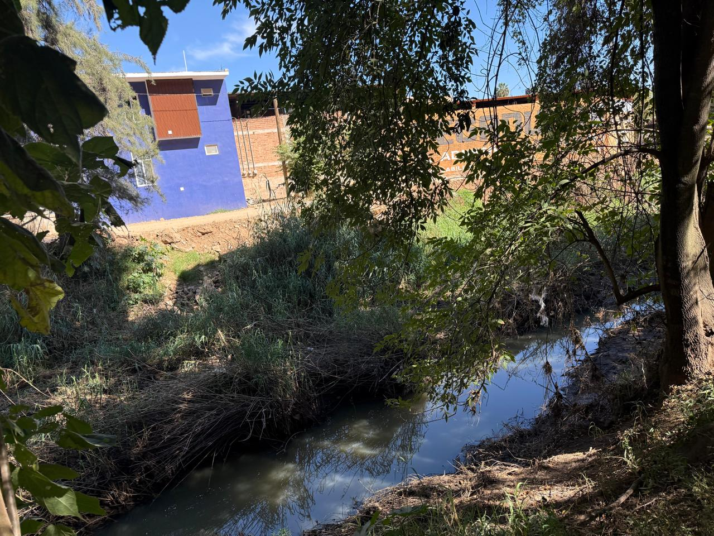

Principales causas 🌊
- Desechos domésticos y urbanos: Casas cercanas vierten aguas negras al río, incluyendo jabón, detergentes y excremento.
- Contaminación industrial: Talleres o pequeñas industrias vierten químicos y residuos que afectan la calidad del agua.
- Agricultura y pesticidas: Fertilizantes y pesticidas llegan al río por lluvia o riego, alterando el ecosistema acuático.
- Desechos sólidos: Plásticos, bolsas y basura bloquean el flujo de agua y afectan a los animales.
- Erosión y sedimentos: Lluvias arrastran tierra y sedimentos, aumentando la turbidez y cambiando el color del agua.
- Falta de conciencia ambiental: Las personas no siempre disponen adecuadamente sus residuos, aumentando la contaminación.
